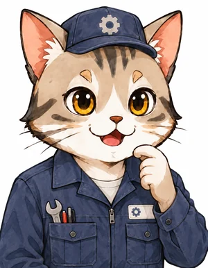
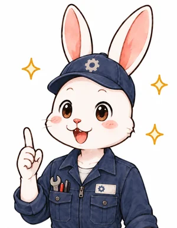
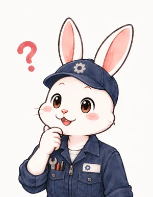

STAGE 8
開発者たち
ヴァンケル・パシュケ・マツダ
🎯 ミッション
ロータリーエンジンが生まれるまでの流れを知ろう。ヴァンケルが形より先に「密封」に取り組んだ理由、ハウジングも回る最初のエンジン DKM と今の KKM の違い（DKM ではハウジングとローターが 3：2 の速さで回る理由）、マツダが克服した「悪魔の爪痕」を説明できれば合格。
未達成

ねこ博士
作図の旅は前のステージで終わった。最後に、この形を最初に思いついた人たちの話をしよう。STAGE1 で、うさ美は「あの形はどうやって決めたんですか？」と聞いたね。今日はその、歴史の側からの答えだ。主人公はフェリクス・ヴァンケル。1902年にドイツで生まれた人で、大学で工学を学んでいない、独学の発明家だった。若い頃から「往復しないエンジン」に夢中で、本人の回想では17歳のとき、回るエンジンの車を運転する夢を見たという。

うさ美
独学だったんですね。でも、往復しないエンジンを作るなら、まず形を考えそうなものです。ヴァンケルさんは、いきなりあの繭形とおむすび形を思いついたんですか？
ねこ博士
そうじゃないんだ。彼がまず取り組んだのは、形ではなく密封、つまりすき間からガスを漏らさないことだった。1920年代から、回転する弁（回転バルブ）のすき間をふさぐ研究を始めて、戦争中も航空機関係の研究所でその仕事を続けた。回る機械は、往復する機械よりすき間をふさぐのがずっと難しい。そこが全部の鍵だと見抜いていたんだね。

うさ美
STAGE2 で、頂点が壁から離れると隣の部屋とつながってしまう、という話をしました。頂点が壁に触れて仕切りになっていても、そこから少しでも漏れたら、部屋を小さくしても混合気は押し縮められません。だから形より先に、仕切りの密封ができないと始まらない、ということですか？
ねこ博士
その通り。そしてもう一つの大仕事が、「回る部品でできる機械の形」を片っ端から分類することだった。何が回るか、内側と外側のどちらが動くか、ふくらみと頂点はいくつか。組合せを表にして、密封できそうなものだけを残していったんだ。じつは、あの繭形の曲線そのものは、彼が発明したものではない。
うさ美
STAGE4 のトロコイドですね。転がる円に付けた点が描く道は、自転車の反射板の道のように、もともと知られていた曲線だった、ということですか？
ねこ博士
そう。トロコイドの仲間は、何百年も前から数学者が調べていた。ヴァンケルの仕事は、無数の組合せの中から「ふくらみ2つ、頂点3つ」の組を、密封できる現実的な機械として選び出したことなんだ。STAGE4 で見た「軸がローターの4倍の速さ」の仲間も、彼の表にはちゃんと載っている。
ヴァンケルの分類表に並ぶ仲間の一部。軸がローターの何倍の速さで回るかで、ハウジングのふくらみの数（1・2・3…）と、ローターの頂点の数（2・3・4…）が決まる。どれも同じ e＝15 mm、R＝105 mm で式から描いた（真ん中以外のローターは頂点を結んで模式的に描いた）。ヴァンケルは、密封のしやすさなどから真ん中の「ふくらみ2・頂点3」を選んだ
うさ美
それで、最初に動いたのが、この旅で描いてきた形なんですか？
ねこ博士
それが違うんだ。ヴァンケルはドイツの自動車会社 NSU と組んで、1957年に最初のエンジン DKM 54 を動かした。これは、ローターだけでなくハウジングも回る方式だった。ローターもハウジングも、それぞれ動かない軸のまわりで回る。偏心軸のように、中心がぐるぐる動く部品はないんだ。
うさ美
ハウジングに乗って見ると、今のエンジンと同じ動きになっていないといけないはずです。STAGE3 の「腕に乗って見る」と同じ考え方で考えてみます。DKM ではローターの中心は止まっているので、ハウジングが1周すると、ハウジングから見たローターの中心は、逆向きに1周して見えます。今のエンジンでは、中心が1周するとローターは同じ向きに 1/3 周するので、逆向きに1周なら、ハウジングから見てローターは逆向きに 120° 回ります。地面から見ると 360°−120°＝240°。ハウジングが1周する間にローターは 2/3 周、つまり速さの比は 3：2、ということですか？
ねこ博士
その通り。DKM では、ハウジングとローターが同じ向きに 3：2 の速さで回っていた。中心がぶれないので、とても滑らかに速く回れたんだ。ただ、困ったことがあった。
うさ美
STAGE7 で、点火プラグはハウジングの壁に付けました。ハウジングが回るなら、プラグも一緒に回ってしまいます。回っている部品に電気を送るのは大変そうです。
ねこ博士
そう。点火も、燃料と空気の出入りも、冷やすのも大変で、部品を見るだけでもエンジンを分解しなければならなかった。そこで NSU の技術者 ハンス・ディーター・パシュケが、ハウジングを止めて、ローターを偏心軸で振り回す形に組み替えた。1958年に動いたこの KKM が、この旅で描いてきたロータリーエンジンなんだ。ヴァンケル本人はこれを「競走馬を農耕馬にした」と嫌ったと伝えられているけれど、その後に使われたのは、こちらの形だった。
左：最初に動いた DKM。ハウジング（灰色の壁）とローター（青）が、それぞれ動かない軸（●）のまわりを、同じ向き（図では時計回り）に 3：2 の速さで回る。点火プラグ（金色）もハウジングと一緒に回ってしまう。右：パシュケの KKM（この旅で描いた形）。ハウジングは止まり、ローターの中心 C が偏心軸で円を描く。左右は、ハウジングから見れば同じ動き（部屋の大きさの変わり方も同じ）になっている。13B の寸法で作図
うさ美
形は同じで、どこを止めてどこを回すかを変えたんですね。STAGE2 で学んだ偏心軸は、この組み替えで生まれたんですか？
ねこ博士
そう。ハウジングを止めた代わりに、ローターの中心を動かす部品が必要になった。それが偏心軸だ。1964年には NSU が、ロータリーエンジンを載せた世界で最初の量産車「ヴァンケルスパイダー」を売り出した。ただ、大きな問題が残っていた。走っているうちに、ハウジングの壁に、波のような傷が並んでしまうんだ。
うさ美
STAGE1 から、頂点はいつも壁に触れながら動く、と見てきました。触れているところが、少しずつ削れてしまうんですか？
ねこ博士
少し違う。原因は、頂点に付いたアペックスシールの振動だった。ものすごい速さで滑るシールが細かく震え、跳ねるように壁を叩くので、一定の間隔で波のような傷が並ぶ。日本のマツダの技術者たちは、これを「悪魔の爪痕」と呼んだ。マツダは1961年に NSU と契約して開発に加わり、山本健一さんを中心とする技術者たちが、シールに穴をあけて震えにくい形にしたり、アルミニウムをしみこませた炭素という新しい材料を使ったりして、この傷を克服した。そして1967年、2つのローターをもつ「コスモスポーツ」を世に出したんだ。
上：高速で滑るアペックスシールが細かく震え、跳ねるようにハウジングの壁を叩くと、一定の間隔で波のような傷（悪魔の爪痕）が並ぶ。下：マツダはシールに穴をあけて震えにくい形にし、アルミニウムをしみこませた炭素などの新しい材料を使って、この傷を克服した（形は模式的に描いている）
うさ美
まとめると、曲線は昔から知られていたもので、それを密封できる機械として選んだのがヴァンケルさん、止める場所を変えたのがパシュケさん、最後の傷を消したのがマツダの人たち。1人のひらめきではなく、何十年もかけて何人もの人がつないだ、ということですか？
ねこ博士
そうだね。そして、きみがこの旅でやったことは、その人たちがたどり着いた形を、たった2つの数 e と R から、自分の手で描き直すことだった。ヴァンケルが表を作って探した形の骨格は、cos と sin と三平方の定理で全部説明できた。これで本当に旅は終わりだ。お疲れさま。
ロータリーエンジン誕生までの年表。赤い点は、この旅で描いた形（KKM）が動いた年と、マツダがそれを量産エンジンに仕上げた年
【このステージの成果】
ヴァンケルは独学の発明家。形より先に、回る機械のすき間をふさぐ「密封」を何十年も研究した
回転機械の組合せを表にして分類し、「ふくらみ2つ・頂点3つ」を選んだ。曲線（トロコイド）そのものは昔から知られていた
最初の DKM（1957年）はハウジングも回る。ハウジングとローターは同じ向きに 3：2 の速さ（ハウジングに乗って見ると今の動きと同じ）
パシュケの KKM（1958年）がハウジングを止め、偏心軸でローターを振り回す今の形に。点火・吸排気・冷却が楽になった
NSU ヴァンケルスパイダー（1964年）が最初の量産車。マツダがアペックスシールの振動による「悪魔の爪痕」を克服し、コスモスポーツ（1967年）へ
確認クイズ
Q1. ヴァンケルが、形を考えるより先に何十年も取り組んだことは？
正解！ 頂点が壁に触れて部屋を仕切っていても、そこから漏れれば圧縮できない。回る機械は往復する機械より密封が難しいので、ヴァンケルは回転バルブの密封の研究から始めた。
Q2. 最初に動いた DKM と、今のロータリーエンジン（KKM）の違いは？
正解！ DKM ではハウジングとローターが同じ向きに 3：2 の速さで回っていた。ハウジングに乗って見ると今と同じ動きだが、点火プラグまで回るので扱いにくかった。パシュケがハウジングを止めた KKM に組み替えた。
Q3. マツダの技術者たちが克服した「悪魔の爪痕」とは？
正解！ 高速で滑るアペックスシールが細かく震えて壁を叩き、波のような傷が並んだ。マツダはシールに穴をあけて震えにくくし、新しい材料を使って克服し、1967年のコスモスポーツにつなげた。